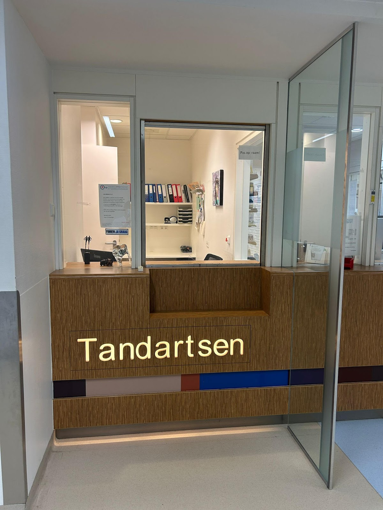
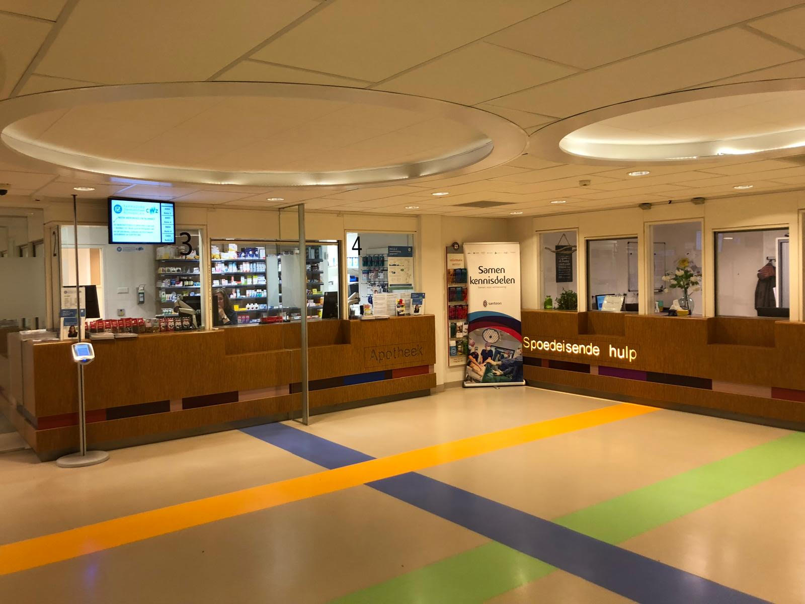
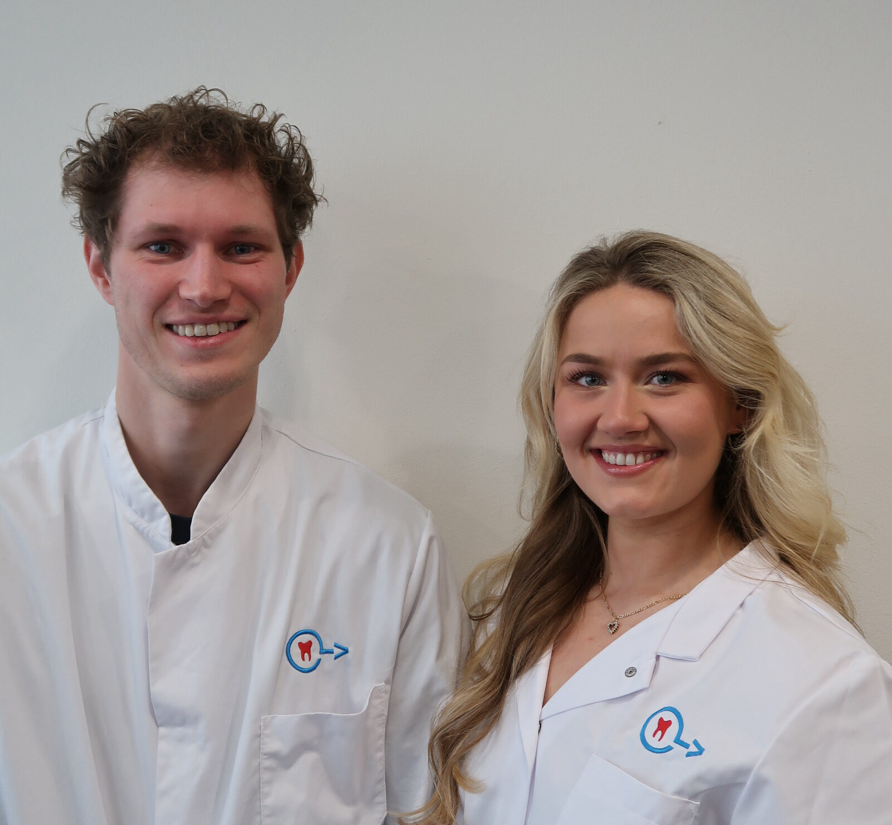

Niet urgent
Kleine spoedbehandelingen
- Uitgevallen kroon of vulling
- Een te hoge vulling
- Scherpe randen die tong of wang beschadigen
- Uitstekend of los ijzerdraadje van een beugel
Spoedtandarts op het Spoedplein van het CWZ
Onze tandartsen zijn 24 uur per dag, 7 dagen per week beschikbaar. Ook in het weekend, op feestdagen en in de vakantie. Bij acute spoed in de nacht wordt er direct een tandarts opgeroepen.

Dit zijn de klachten waarvoor mensen het vaakst bij ons komen. Herkent u er een? Bel ons voor een afspraak. We doen ons best u zo snel mogelijk te helpen.
Bij een uitgeslagen, losse of verplaatste tand telt elke minuut. Hoe sneller u handelt, hoe groter de kans dat de tand behouden blijft. Na terugplaatsen zet de tandarts de tand meestal ongeveer 3 weken vast met een spalk.
Zet een melktand nooit terug in de kaak. Dat kan de blijvende tand die nog moet doorkomen ernstig beschadigen. Neem wel direct contact met ons op.
Dat is het deel dat normaal boven het tandvlees uitsteekt. Raak de wortel nooit aan.
Maximaal 10 seconden onder koud stromend water.
Plaats de tand voorzichtig terug in de lege tandkas.
Bewaar de tand in de wangzak of in een bakje melk. Hij mag niet uitdrogen.

Onze tandartsen werken nauw samen met de apotheek, de huisartsenpost, de Spoedeisende Hulp en de kaakchirurgen, allemaal in het CWZ. Is een recept voor pijnstillers genoeg, dan haalt u het meteen op bij de apotheek. Is het ingewikkelder, dan kunnen we een beroep doen op de specialisten van het ziekenhuis.
Afhankelijk van de behandeling meestal tussen
€50 – €350
U betaalt direct na de behandeling, het liefst met pin of creditcard.
Daarna krijgt u een factuur die u bij uw zorgverzekeraar kunt declareren. Op de website van uw verzekeraar ziet u of de behandeling vergoed wordt.
Al onze tarieven volgen de tariefbeschikking van de Nederlandse Zorgautoriteit (NZa).

Rustig uitleggen, ook als het spannend is.
Wie met spoed komt, heeft vaak pijn of is geschrokken. Daarom nemen we de tijd om uit te leggen wat we zien en wat we gaan doen.
4,2 uit 121 Google-reviews
"Praktijk bezocht in verband met een sportongeluk van onze dochter. Dochter vond het heel spannend en was erg verdrietig. We zijn geholpen door een ontzettend vriendelijke tandarts die alle tijd nam voor haar en haar echt geruststelde."
"Ben zeer tevreden over de hulp van de tandartsspoedpraktijk. Ik werd gerustgesteld, alles werd rustig uitgelegd, er werd kalm en met aandacht gehandeld en uiteindelijk is de vulling die spontaan binnen enkele weken na plaatsing uit mijn kies was gevallen en op een lastige plek zat, uitstekend door een nieuwe vervangen."
"Omdat mijn tandarts met vakantie is en ik in Nijmegen werk ben ik hier vandaag geweest. Ik was ruim op tijd en mocht zelfs eerder naar binnen dan de afgesproken tijd. Direct foto gemaakt en de klacht in zoverre pijnvrij verholpen."
€1,40 per gesprek. Alleen bereikbaar vanaf een Nederlands telefoonnummer.
Mail ons voor een afspraak op uw voorkeurslocatie:
callcenter@tandartsspoedpraktijk.nl
Spoedplein CWZ
Weg door Jonkerbos 100
6532 CN Nijmegen
Elke dag 24 uur, ook in het weekend en op feestdagen.